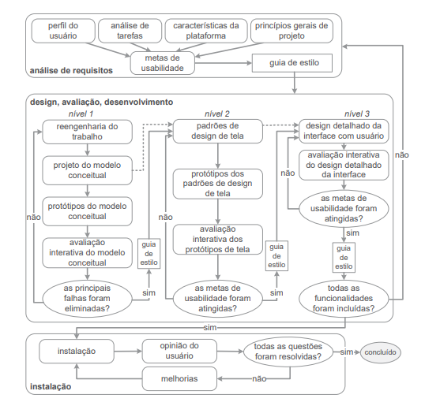

Entrega Final
Introdução
Nesse artefato, iremos apresentar a entrega final do projeto e tudo que foi desenvolvido durante este semestre, em um breve resumo.
Site Selecionado
Sobre a Wikipédia
A Wikipedia é uma plataforma de enciclopédia colaborativa online que tem um grande número de usuários em todo o mundo. Ela foi lançada em 2001 e permite que qualquer pessoa escreva e edite artigos, resultando em um acervo em constante crescimento.
Justificativa da escolha
A Wikipédia foi escolhida como objeto de estudo na disciplina por ainda não ter sido estudada anteriormente na matéria, além de conter uma grande base de usuários, o que facilita o contato com eles, visto que a disciplina enfatiza bastante a interação com os usuários. A interface também é pouco amigável, possuindo muitas informações em algumas telas e algumas tarefas tendo uma grande complexidade.
Ciclo de Vida
Dentre todos os ciclos de vida explicados e pesquisados durante o projeto que podem ser encontrados no artefato Processo de Design, o grupo escolheu o Ciclo de Vida de Mayhew, pois, esse mesmo detalha bem os processos a serem executados, para pessoas que estão aprendendo, isso é muito importante, características que os outros não apresentaram de forma explcíta, o que poderia prejudicar o grupo caso não conhecesse bem quais artefatos deveriam ser entregues para gerar uma solução de IHC bem entregue, o perfil do grupo início da jornada era de iniciantes que não conheciam quais artefatos deveriam ser entregues e conceitos a serem descritos e entendidos. Com o ciclo de vida Escolhida, a Figura 1, deixa de forma clara, o que projeto deveria seguia e se organizar, para que uma entrega bem feita ocorresse.

Figura 1: Modelo de Ciclo de Vida com uso engenharia da usabilidade(adaptado de Mayhew,1999)
Apesar de tal Ciclo de Vida escolhido, o grupo ainda poderia utilizar características de outros ciclos de vida, para melhor se adaptar ao que seria entregue.
Cronograma planejado e realizado
No início do projeto, a equipe planejou as datas para cada uma das atividades que seriam realizadas durante o decorrer da matéria, se encontrando na tabela 1 a 10. Além disso, foram registradas as datas realmente efetivadas na tabela 11 a 20.
Cronograma planejado
Entrega 1 - Planejamento
| Tarefa | Autor(es) | Período de desenvolvimento | Revisor(es) | Período de revisão |
|---|---|---|---|---|
| Criação da documentação | Lucas | 01/04 - 01/04 | Gabriel | 22/04 - 23/04 |
| Ata reunião 1 | Lucas | 01/04 - 08/04 | Gabriel | 09/04 - 23/04 |
| Ata reunião 2 | Pedro | 07/04 - 14/04 | Samuel | 22/04 - 23/04 |
| Ata reunião 3 | Ana | 21/04 - 24/04 | Lucas | 24/04 - 24/04 |
| Cronograma geral | Lucas | 01/04 - 08/04 | Gabriel | 09/04 - 23/04 |
| Ferramentas | Pedro | 01/04 - 03/04 | Lucas | 03/04 |
| Documentação da equipe | Ana | 01/04 - 07/04 | Chaydson | 08/04 - 23/04 |
| Processo de design | Gabriel | 01/04 - 21/04 | Ana | 22/04 - 23/04 |
| Página de escolha do ciclo de vida | Gabriel | 01/04 - 21/04 | Ana | 22/04 - 23/04 |
| Aplicação do Framework DECIDE no site escolhido | Chaydson, Ana, Lucas e Pedro | 01/04 - 21/04 | Samuel e Gabriel | 22/04 - 23/04 |
| Lista de sites avaliados | Samuel | 01/04 - 21/04 | Chaydson | 22/04 - 23/04 |
| Site escolhido | Samuel | 01/04 - 21/04 | Chaydson | 22/04 - 23/04 |
| Criação dos termos de utilização | Pedro | 21/04 - 21/04 | Gabriel | 22/04 - 23/04 |
| Quadro de disponibilidade | Gabriel | 21/04 - 21/04 | Chaydson | 22/04 - 23/04 |
| Metodologias | Lucas | 21/04 - 21/04 | Chaydson | 22/04 - 23/04 |
| Politicas | Lucas | 21/04 - 21/04 | Chaydson | 22/04 - 23/04 |
| Gravação da Apresentação | Lucas, Chaydson, Pedro, Samuel, Gabriel e Ana | 01/04 - 21/04 | Lucas, Chaydson, Pedro, Samuel, Gabriel e Ana | 22/04 - 23/04 |
| Finalização | Lucas, Chaydson, Pedro, Samuel, Gabriel e Ana | 26/04 - 28/04 | Lucas, Chaydson, Pedro, Samuel, Gabriel e Ana | 29/04 |
Tabela 1: Cronograma da entrega 1 (Fonte: Lucas Frazão. 2023).
Entrega 2 - Perfil do usuário
| Tarefa | Autor(es) | Período de desenvolvimento | Revisor(es) | Período de revisão |
|---|---|---|---|---|
| Perfil do usuário | Gabriel | 24/04 - 28/04 | Chaydson | 06/05 - 07/05 |
| Aspectos éticos de pesquisas envolvendo pessoas | Ana | 24/04 - 05/05 | Pedro | 06/05 - 07/05 |
| Personas | Lucas / Pedro / Samuel | 24/04 - 05/05 | Gabriel / Ana | 06/05 - 07/05 |
| Análise de tarefas | Chaydson / Samuel | 24/04 - 05/05 | Lucas | 06/05 - 07/05 |
| Gravação da apresentação | Lucas, Chaydson, Pedro, Samuel, Gabriel e Ana | 24/04 - 05/05 | Lucas, Chaydson, Pedro, Samuel, Gabriel e Ana | 06/05 - 07/05 |
| Finalização | Lucas, Chaydson, Pedro, Samuel, Gabriel e Ana | 24/04 - 05/05 | Lucas, Chaydson, Pedro, Samuel, Gabriel e Ana | 06/05 - 07/05 |
| Ata da reunião 4 | Pedro | 05/05 - 06/05 | Samuel | 06/05 - 07/05 |
Tabela 2: Cronograma da entrega 2 (Fonte: Lucas Frazão. 2023).
Entrega 3 - Princípios gerais do projeto
| Tarefa | Autor(es) | Período de desenvolvimento | Revisor(es) | Período de revisão |
|---|---|---|---|---|
| Princípios gerais de projeto | Ana | 08/05 - 12/05 | Pedro | 13/05 - 14/05 |
| Metas de usabilidade | Gabriel | 08/05 - 12/05 | Chaydson | 13/05 - 14/05 |
| Guia de estilo | Lucas / Chaydson | 08/05 - 12/05 | Gabriel / Samuel | 13/05 - 14/05 |
| Características da plataforma para o projeto | Samuel / Pedro | 08/05 - 12/05 | Ana | 13/05 - 14/05 |
| Gravação da apresentação | Lucas, Chaydson, Pedro, Samuel, Gabriel e Ana | 08/05 - 12/05 | Lucas, Chaydson, Pedro, Samuel, Gabriel e Ana | 13/05 - 14/05 |
| Finalização | Lucas, Chaydson, Pedro, Samuel, Gabriel e Ana | 08/05 - 12/05 | Lucas, Chaydson, Pedro, Samuel, Gabriel e Ana | 13/05 - 14/05 |
Tabela 3: Cronograma da entrega 3 (Fonte: Lucas Frazão. 2023).
Entrega 4 - Planejamento da avaliação do storyboard
| Tarefa | Autor(es) | Período de desenvolvimento | Revisor(es) | Período de revisão |
|---|---|---|---|---|
| Planejamento da avaliação do storyboard | Pedro / Ana | 15/05 - 21/05 | Chaydson / Pedro | 21/05 - 22/05 |
| Planejamento do relato dos resultados da avaliação do Storyboard | Chaydson | 15/05 - 21/05 | Gabriel | 21/05 - 22/05 |
| Planejamento da Avaliação da Análise de tarefas | Gabriel / Samuel | 15/05 - 21/05 | Lucas | 21/05 - 22/05 |
| Planejamento do relato dos resultados da avaliação da Análise de tarefas | Lucas | 15/05 - 21/05 | Ana | 21/05 - 22/05 |
| Gravação da apresentação | Lucas, Chaydson, Pedro, Samuel, Gabriel e Ana | 22/05/2023 | Lucas, Chaydson, Pedro, Samuel, Gabriel e Ana | 22/05/2023 |
| Finalização | Lucas, Chaydson, Pedro, Samuel, Gabriel e Ana | 22/05/2023 - 26/05/2023 | Lucas, Chaydson, Pedro, Samuel, Gabriel e Ana | 26/05/2023 - 29/05/2023 |
Tabela 4: Cronograma da entrega 4 (Fonte: Lucas Frazão. 2023).
Entrega 5 - Resultados
| Tarefa | Autor(es) | Período de desenvolvimento | Revisor(es) | Período de revisão |
|---|---|---|---|---|
| Criação de um storyboard com base na análise de tarefa | Ana, Lucas, Chaydson, Gabriel, Samuel e Pedro | 22/05 - 29/05 | Ana, Lucas, Chaydson, Gabriel, Samuel e Pedro | 29/05 |
| Executar teste piloto do Story Board | Ana e Lucas | 22/05 - 29/05 | Chaydson e Pedro | 29/05 |
| Entrevistar os usuários do Story Board | Chaydson e Pedro | 22/05 - 29/05 | Lucas e Ana | 29/05 |
| Realizar o relato dos resultados do Story Board | Chaydson e Pedro | 22/05 - 29/05 | Lucas e Ana | 29/05 |
| Criação de análise de tarefa | Gabriel, Pedro e Ana | 22/05 - 29/05 | Gabriel e Samuel | 29/05 |
| Executar teste piloto na análise de tarefa | Gabriel e Samuel | 22/05 - 29/05 | Lucas | 29/05 |
| Entrevistas os usuários da análise de tarefa | Gabriel e Samuel | 22/05 - 29/05 | Pedro | 29/05 |
| Realizar o relato da análise de tarefa | Gabriel e Samuel | 22/05 - 29/05 | Chaydson | 29/05 |
| Planejamento da avaliação do protótipo de papel | Lucas, Gabriel e Ana | 22/05 - 29/05 | Pedro | 29/05 |
| Planejamento do relato dos resultados da avaliação do protótipo de papel | Chaydson, Ana e Lucas | 22/05 - 29/05 | Pedro | 29/05 |
| Gravação da apresentação | Ana, Lucas, Chaydson, Gabriel, Samuel e Pedro | 29/05 | Ana, Lucas, Chaydson, Gabriel, Samuel e Pedro | 29/05 |
| Finalização | Ana, Lucas, Chaydson, Gabriel, Samuel e Pedro | 29/05 - 02/06 | Ana, Lucas, Chaydson, Gabriel, Samuel e Pedro | 29/05 |
Tabela 5: Cronograma da entrega 5 (Fonte: Lucas Frazão. 2023).
Entrega 6.1 - Verificação dos artefatos do Lucas, Chaydson, Pedro, Samuel, Gabriel e Ana 3
| Tarefa | Autor(es) | Período de desenvolvimento | Revisor | Período de revisão |
|---|---|---|---|---|
| Cronograma | Pedro | 02/06 - 05/06 | Lucas | 05/06 |
| Sites avaliados | Ana | 02/06 - 05/06 | Samuel | 05/06 |
| Site selecionado | Chaydson | 02/06 - 05/06 | Samuel | 05/06 |
| Metodologia | Gabriel | 02/06 - 05/06 | Gabriel | 05/06 |
| Ferramentas | Lucas | 02/06 - 05/06 | Pedro | 05/06 |
| Processos de Design | Samuel | 02/06 - 05/06 | Gabriel | 05/06 |
| Criação do perfil do Usuário | Lucas | 02/06 - 05/06 | Gabriel | 05/06 |
| Desenvolvimento das personas | Samuel e Chaydson | 02/06 - 05/06 | Lucas e Pedro | 05/06 |
| Análise das tarefas do usuário (técnicas HTA e CTT) | Pedro | 02/06 - 05/06 | Chaydson e Samuel | 05/06 |
| Aspectos éticos de pesquisa envolvendo pessoas | Gabriel | 02/06 - 05/06 | Ana | 05/06 |
| Criação dos cenário | Ana | 02/06 - 05/06 | Ana | 05/06 |
| Definir os princípios gerais do projeto | Lucas | 02/06 - 05/06 | Ana | 05/06 |
| Determinar as metas de usabilidade | Pedro | 02/06 - 05/06 | Gabriel | 05/06 |
| Criar o guia de estilo | Gabriel e Samuel | 02/06 - 05/06 | Lucas e Chaydson | 05/06 |
| Determinar as características da plataforma para o projeto | Ana e Chaydson | 02/06 - 05/06 | Samuel e Pedro | 05/06 |
| Planejar a avaliação do Story Board | Chaydson e Lucas | 02/06 - 05/06 | Pedro e Ana | 05/06 |
| Planejar a avaliação da Análise de Tarefas | Ana e Pedro | 02/06 - 05/06 | Gabriel e Samuel | 05/06 |
| Planejar o retato da avaliação do Story Board | Samuel | 02/06 - 05/06 | Chaydson | 05/06 |
| Planejar o retato da avaliação da Análise de Tarefas | Gabriel | 02/06 - 05/06 | Lucas | 05/06 |
| Relatar os resultados do Story Board | Gabriel e Samuel | 02/06 - 05/06 | Chaydson e Pedro | 05/06 |
| Relatar a análise de tarefas | Ana e Lucas | 02/06 - 05/06 | Gabriel e Samuel | 05/06 |
| Planejar a avaliação do protótipo de papel | Chaydson | 02/06 - 05/06 | Lucas, Ana e Gabriel | 05/06 |
| Planejar o relato dos resultados da avaliação do protótipo de papel | Pedro | 02/06 - 05/06 | Chaydson, Ana e Lucas | 05/06 |
| Gravação da apresentação | Lucas, Chaydson, Pedro, Gabriel, Ana, Samuel | 05/06 | Lucas, Chaydson, Pedro, Gabriel, Ana, Samuel | 05/06 |
| Finalização | Lucas, Chaydson, Pedro, Gabriel, Ana, Samuel | 06/06 - 12/06 | Lucas, Chaydson, Pedro, Gabriel, Ana, Samuel | 13/06 |
Tabela 6: Cronograma da entrega 6.1 (Fonte: Lucas Frazão. 2023).
Entrega 6.2 - Verificação dos artefatos do próprio Lucas, Chaydson, Pedro, Samuel, Gabriel e Ana
| Tarefa | Autor(es) | Período de desenvolvimento | Revisor | Período de revisão |
|---|---|---|---|---|
| Cronograma | Pedro | 12/06 - 18/06 | Lucas | 19/06 |
| Sites avaliados | Ana | 12/06 - 18/06 | Samuel | 19/06 |
| Site selecionado | Chaydson | 12/06 - 18/06 | Samuel | 19/06 |
| Metodologia | Gabriel | 12/06 - 18/06 | Chaydson | 19/06 |
| Ferramentas | Lucas | 12/06 - 18/06 | Pedro | 19/06 |
| Processos de Design | Samuel | 12/06 - 18/06 | Gabriel | 19/06 |
| Criação do perfil do Usuário | Lucas | 12/06 - 18/06 | Gabriel | 19/06 |
| Desenvolvimento das personas | Samuel e Chaydson | 12/06 - 18/06 | Lucas e Pedro | 19/06 |
| Análise das tarefas do usuário (técnicas HTA e CTT) | Pedro | 12/06 - 18/06 | Chaydson e Samuel | 19/06 |
| Aspectos éticos de pesquisa envolvendo pessoas | Gabriel | 12/06 - 18/06 | Ana | 19/06 |
| Criação dos cenário (Storyboards) | Ana | 12/06 - 18/06 | Lucas | 19/06 |
| Definir os princípios gerais do projeto | Lucas | 12/06 - 18/06 | Ana | 19/06 |
| Determinar as metas de usabilidade | Pedro | 12/06 - 18/06 | Gabriel | 19/06 |
| Criar o guia de estilo | Gabriel e Samuel | 12/06 - 18/06 | Lucas e Chaydson | 19/06 |
| Determinar as características da plataforma para o projeto | Ana e Chaydson | 12/06 - 18/06 | Samuel e Pedro | 19/06 |
| Planejar a avaliação do Story Board | Chaydson e Lucas | 12/06 - 18/06 | Pedro e Ana | 19/06 |
| Planejar a avaliação da Análise de Tarefas | Ana e Pedro | 12/06 - 18/06 | Gabriel e Samuel | 19/06 |
| Planejar o retato da avaliação do Story Board | Samuel | 12/06 - 18/06 | Chaydson | 19/06 |
| Planejar o retato da avaliação da Análise de Tarefas | Gabriel | 12/06 - 18/06 | Lucas | 19/06 |
| Relatar os resultados do Story Board | Gabriel e Samuel | 12/06 - 18/06 | Chaydson e Pedro | 19/06 |
| Relatar a análise de tarefas | Ana e Lucas | 12/06 - 18/06 | Gabriel e Samuel | 19/06 |
| Planejar a avaliação do protótipo de papel | Chaydson | 12/06 - 18/06 | Lucas, Ana e Gabriel | 19/06 |
| Planejar o relato dos resultados da avaliação do protótipo de papel | Pedro | 12/06 - 18/06 | Chaydson, Ana e Lucas | 19/06 |
| Relatar o prótipo de papel | Ana | 12/06 - 18/06 | Gabriel e Samuel | 19/06 |
| Planejar a avaliação do protótipo de alta fidelidade | Chaydson | 12/06 - 18/06 | Ana | 19/06 |
| Planejar o relato do protótipo de alta fidelidade | Lucas | 12/06 - 18/06 | Pedro | 19/06 |
| Gravação da apresentação | Lucas, Chaydson, Pedro, Gabriel, Ana, Samuel | 19/06 | Lucas, Chaydson, Pedro, Gabriel, Ana, Samuel | 19/06 |
| Finalização | Lucas, Chaydson, Pedro, Gabriel, Ana, Samuel | 19/06 - 23/06 | Lucas, Chaydson, Pedro, Gabriel, Ana, Samuel | 23/06 |
Tabela 7: Cronograma da entrega 6.2 (Fonte: Lucas Frazão. 2023).
Entrega 7 - Relato dos resultados do protótipo de papel
| Tarefa | Autor(es) | Período de desenvolvimento | Revisor(es) | Período de revisão |
|---|---|---|---|---|
| Relato dos resultados do protótipo de papel | Gabriel / Samuel | 29/05 - 09/06 | Chaydson / Lucas | 10/06 - 11/06 |
| Planejamento da avaliação do protótipo de alta fidelidade | Ana / Chaydson | 29/05 - 09/06 | Pedro / Samuel | 10/06 - 11/06 |
| planejamento do relato dos resultados da avaliação do protótipo de alta fidelidade | Lucas / Pedro | 29/05 - 09/06 | Gabriel / Ana | 10/06 - 11/06 |
| Gravação da apresentação | Lucas, Chaydson, Pedro, Samuel, Gabriel e Ana | 29/05 - 09/06 | Lucas, Chaydson, Pedro, Samuel, Gabriel e Ana | 10/06 - 11/06 |
| Finalização | Lucas, Chaydson, Pedro, Samuel, Gabriel e Ana | 29/05 - 09/06 | Lucas, Chaydson, Pedro, Samuel, Gabriel e Ana | 10/06 - 11/06 |
Tabela 8: Cronograma da entrega 7 (Fonte: Lucas Frazão. 2023).
Entrega 8 - Relatos dos resultados
| Tarefa | Autor(es) | Data limite da entrega | Revisor(es) | Data limite da revisão |
|---|---|---|---|---|
| Relato dos resultados do protótipo de alta fidelidade. | Lucas, Chaydson, Pedro, Samuel, Gabriel e Ana | 12/06 - 23/06 | Lucas, Chaydson, Pedro, Samuel, Gabriel e Ana | 24/06 - 25/06 |
| Gravação da apresentação | Lucas, Chaydson, Pedro, Samuel, Gabriel e Ana | 12/06 - 23/06 | Lucas, Chaydson, Pedro, Samuel, Gabriel e Ana | 24/06 - 25/06 |
| Finalização | Lucas, Chaydson, Pedro, Samuel, Gabriel e Ana | 12/06 - 23/06 | Lucas, Chaydson, Pedro, Samuel, Gabriel e Ana | 24/06 - 25/06 |
Tabela 9: Cronograma da entrega 8 (Fonte: Lucas Frazão. 2023).
Entrega 9 - Entrega final
| Tarefa | Autor(es) | Data limite da entrega | Revisor(es) | Data limite da revisão |
|---|---|---|---|---|
| Entrega da apresentação do projeto final | Lucas, Chaydson, Pedro, Samuel, Gabriel e Ana | 26/06 - 02/07 | Lucas, Chaydson, Pedro, Samuel, Gabriel e Ana | 03/07 - 04/07 |
| Gravação da apresentação | Lucas, Chaydson, Pedro, Samuel, Gabriel e Ana | 26/06 - 02/07 | Lucas, Chaydson, Pedro, Samuel, Gabriel e Ana | 03/07 - 04/07 |
| Finalização | Lucas, Chaydson, Pedro, Samuel, Gabriel e Ana | 26/06 - 02/07 | Lucas, Chaydson, Pedro, Samuel, Gabriel e Ana | 03/07 - 04/07 |
Tabela 10: Cronograma da entrega 9 (Fonte: Lucas Frazão. 2023).
Cronograma realizado
Entrega 1 - Planejamento
Na tabela 1 encontra-se o cronograma realizado da entrega 1
| Tarefa | Autor(es) | Período de desenvolvimento | Revisor(es) | Período de revisão |
|---|---|---|---|---|
| Criação da documentação | Lucas | 01/04 - 22/04 | Gabriel | 23/04 |
| Ata reunião 1 | Lucas | 01/04 - 22/04 | Gabriel | 23/04 |
| Ata reunião 2 | Pedro | 01/04 - 22/04 | Samuel | 23/04 |
| Cronograma geral | Lucas | 01/04 - 22/04 | Gabriel | 23/04 |
| Ferramentas | Pedro | 01/04 - 22/04 | Lucas | 23/04 |
| Documentação da equipe | Ana | 01/04 - 22/04 | Chaydson | 23/04 |
| Processo de design | Gabriel | 01/04 - 22/04 | Ana | 23/04 |
| Aplicação do Framework DECIDE no site escolhido | Chaydson, Ana, Lucas e Pedro | 01/04 - 22/04 | Gabriel | 23/04 |
| Lista de sites avaliados | Samuel | 01/04 - 22/04 | Chaydson | 23/04 |
| Disponibilidade dos membros | Gabriel | 01/04 - 22/04 | Lucas | 23/04 |
| Metodologias | Lucas | 01/04 - 22/04 | Ana | 23/04 |
| Gravação da Apresentação | Lucas, Chaydson, Pedro, Samuel, Gabriel e Ana | 24/04 | Lucas, Chaydson, Pedro, Samuel, Gabriel e Ana | 24/04 |
| Finalização | Lucas, Chaydson, Pedro, Samuel, Gabriel e Ana | 24/04 - 28/04 | Lucas, Chaydson, Pedro, Samuel, Gabriel e Ana | 24/04 - 28/04 |
Tabela 11: Cronograma realizada da entrega 1 (Fonte: Lucas Frazão. 2023).
Entrega 2 - Perfil do usuário
| Tarefa | Autor(es) | Período de desenvolvimento | Revisor(es) | Período de revisão |
|---|---|---|---|---|
| Perfil do usuário | Gabriel | 24/04 - 28/04 | Chaydson | 28/04 - 29/04 |
| Aspectos éticos de pesquisas envolvendo pessoas | Ana | 24/04 - 07/05 | Pedro | 08/05 |
| Personas | Lucas / Pedro / Samuel | 24/04 - 07/05 | Gabriel / Ana | 08/05 |
| Análise de tarefas - HTA | Chaydson | 24/04 - 07/05 | Lucas | 08/05 |
| Análise de tarefas - GOMS | Samuel | 24/04 - 07/05 | Lucas | 08/05 |
| Ata da reunião 4 | Pedro | 24/04 - 07/05 | Samuel | 08/05 |
| Gravação da apresentação | Lucas, Chaydson, Pedro, Samuel, Gabriel e Ana | 08/05 | Lucas, Chaydson, Pedro, Samuel, Gabriel e Ana | 08/05 |
| Finalização | Lucas, Chaydson, Pedro, Samuel, Gabriel e Ana | 08/05 - 12/05 | Lucas, Chaydson, Pedro, Samuel, Gabriel e Ana | 08/05 - 12/05 |
Tabela 12: Cronograma realizada da entrega 2 (Fonte: Lucas Frazão. 2023).
Entrega 3 - Princípios gerais do projeto
| Tarefa | Autor(es) | Período de desenvolvimento | Revisor(es) | Período de revisão |
|---|---|---|---|---|
| Princípios gerais de projeto | Ana | 08/05 - 14/05 | Pedro | 15/05 |
| Metas de usabilidade | Gabriel | 08/05 - 14/05 | Chaydson | 15/05 |
| Guia de estilo | Lucas / Chaydson | 08/05 - 14/05 | Gabriel / Samuel | 15/05 |
| Características da plataforma para o projeto | Samuel / Pedro | 08/05 - 14/05 | Ana | 15/05 |
| Gravação da apresentação | Lucas, Chaydson, Pedro, Samuel, Gabriel e Ana | 15/05 | Lucas, Chaydson, Pedro, Samuel, Gabriel e Ana | 15/05 |
| Finalização | Lucas, Chaydson, Pedro, Samuel, Gabriel e Ana | 15/05 - 19/05 | Lucas, Chaydson, Pedro, Samuel, Gabriel e Ana | 15/05- 19/05 |
Tabela 13: Cronograma realizada da entrega 3 (Fonte: Lucas Frazão. 2023).
Entrega 4 - Planejamento da avaliação do storyboard
| Tarefa | Autor(es) | Período de desenvolvimento | Revisor(es) | Período de revisão |
|---|---|---|---|---|
| Planejamento da avaliação do storyboard | Pedro / Ana | 15/05 - 21/05 | Chaydson / Lucas | 22/05 |
| Planejamento do relato dos resultados da avaliação do Storyboard | Chaydson | 15/05 - 21/05 | Gabriel | 22/05 |
| Planejamento da Avaliação da Análise de tarefas | Gabriel / Samuel | 15/05 - 21/05 | Lucas | 22/05 |
| Planejamento do relato dos resultados da avaliação da Análise de tarefas | Lucas | 15/05 - 21/05 | Ana | 22/05 |
| Criação das atas de reunião | Samuel | 15/05 - 21/05 | Pedro | 22/05 |
| Gravação da apresentação | Lucas, Chaydson, Pedro, Samuel, Gabriel e Ana | 22/05 | Lucas, Chaydson, Pedro, Samuel, Gabriel e Ana | 22/05 |
| Finalização | Lucas, Chaydson, Pedro, Samuel, Gabriel e Ana | 22/05 - 26/05 | Lucas, Chaydson, Pedro, Samuel, Gabriel e Ana | 22/05 - 26/05 |
Tabela 14: Cronograma realizada da entrega 4 (Fonte: Lucas Frazão. 2023).
Entrega 5 - Resultados
| Tarefa | Autor(es) | Período de desenvolvimento | Revisor(es) | Período de revisão |
|---|---|---|---|---|
| Criação de um storyboard com base na análise de tarefa | Ana, Lucas, Chaydson, Gabriel, Samuel e Pedro | 22/05 - 28/05 | Ana, Lucas, Chaydson, Gabriel, Samuel e Pedro | 29/05 |
| Executar teste piloto do Story Board | Ana e Lucas | 22/05 - 28/05 | Chaydson e Pedro | 29/05 |
| Entrevistar os usuários do Story Board | Chaydson e Pedro | 22/05 - 28/05 | Lucas e Ana | 29/05 |
| Realizar o relato dos resultados do Story Board | Chaydson e Pedro | 22/05 - 28/05 | Lucas e Ana | 29/05 |
| Criação de análise de tarefa | Gabriel, Pedro e Ana | 22/05 - 28/05 | Gabriel e Samuel | 29/05 |
| Executar teste piloto na análise de tarefa | Gabriel e Samuel | 22/05 - 28/05 | Lucas | 29/05 |
| Entrevistas os usuários da análise de tarefa | Gabriel e Samuel | 22/05 - 28/05 | Pedro | 29/05 |
| Realizar o relato da análise de tarefa | Gabriel e Samuel | 22/05 - 28/05 | Chaydson | 29/05 |
| Planejamento da avaliação do protótipo de papel | Lucas, Gabriel e Ana | 22/05 - 28/05 | Pedro | 29/05 |
| Planejamento do relato dos resultados da avaliação do protótipo de papel | Chaydson, Ana e Lucas | 22/05 - 28/05 | Pedro | 29/05 |
| Gravação da apresentação | Ana, Lucas, Chaydson, Gabriel, Samuel e Pedro | 29/05 | Ana, Lucas, Chaydson, Gabriel, Samuel e Pedro | 29/05 |
| Finalização | Ana, Lucas, Chaydson, Gabriel, Samuel e Pedro | 29/05 - 02/06 | Ana, Lucas, Chaydson, Gabriel, Samuel e Pedro | 29/05 - 02/06 |
Tabela 15: Cronograma realizada da entrega 5 (Fonte: Lucas Frazão. 2023).
Entrega 6.1 - Verificação dos artefatos do grupo 3
| Tarefa | Autor(es) | Período de desenvolvimento | Revisor | Período de revisão |
|---|---|---|---|---|
| Cronograma | Pedro | 02/06 - 05/06 | Lucas | 05/06 |
| Sites avaliados | Ana | 02/06 - 05/06 | Samuel | 05/06 |
| Site selecionado | Chaydson | 02/06 - 05/06 | Samuel | 05/06 |
| Metodologia | Gabriel | 02/06 - 05/06 | Gabriel | 05/06 |
| Ferramentas | Lucas | 02/06 - 05/06 | Pedro | 05/06 |
| Processos de Design | Samuel | 02/06 - 05/06 | Gabriel | 05/06 |
| Criação do perfil do Usuário | Lucas | 02/06 - 05/06 | Gabriel | 05/06 |
| Desenvolvimento das personas | Samuel e Chaydson | 02/06 - 05/06 | Lucas e Pedro | 05/06 |
| Análise das tarefas do usuário (técnicas HTA e CTT) | Pedro | 02/06 - 05/06 | Chaydson e Samuel | 05/06 |
| Aspectos éticos de pesquisa envolvendo pessoas | Gabriel | 02/06 - 05/06 | Ana | 05/06 |
| Criação dos cenário | Ana | 02/06 - 05/06 | Ana | 05/06 |
| Definir os princípios gerais do projeto | Lucas | 02/06 - 05/06 | Ana | 05/06 |
| Determinar as metas de usabilidade | Pedro | 02/06 - 05/06 | Gabriel | 05/06 |
| Criar o guia de estilo | Gabriel e Samuel | 02/06 - 05/06 | Lucas e Chaydson | 05/06 |
| Determinar as características da plataforma para o projeto | Ana e Chaydson | 02/06 - 05/06 | Samuel e Pedro | 05/06 |
| Planejar a avaliação do Story Board | Chaydson e Lucas | 02/06 - 05/06 | Pedro e Ana | 05/06 |
| Planejar a avaliação da Análise de Tarefas | Ana e Pedro | 02/06 - 05/06 | Gabriel e Samuel | 05/06 |
| Planejar o retato da avaliação do Story Board | Samuel | 02/06 - 05/06 | Chaydson | 05/06 |
| Planejar o retato da avaliação da Análise de Tarefas | Gabriel | 02/06 - 05/06 | Lucas | 05/06 |
| Relatar os resultados do Story Board | Gabriel e Samuel | 02/06 - 05/06 | Chaydson e Pedro | 05/06 |
| Relatar a análise de tarefas | Ana e Lucas | 02/06 - 05/06 | Gabriel e Samuel | 05/06 |
| Planejar a avaliação do protótipo de papel | Chaydson | 02/06 - 05/06 | Lucas, Ana e Gabriel | 05/06 |
| Planejar o relato dos resultados da avaliação do protótipo de papel | Pedro | 02/06 - 05/06 | Chaydson, Ana e Lucas | 05/06 |
| Gravação da apresentação | Lucas, Chaydson, Pedro, Gabriel, Ana, Samuel | 05/06 | Lucas, Chaydson, Pedro, Gabriel, Ana, Samuel | 05/06 |
| Finalização | Lucas, Chaydson, Pedro, Gabriel, Ana, Samuel | 06/06 - 12/06 | Lucas, Chaydson, Pedro, Gabriel, Ana, Samuel | 06/06 - 12/06 |
Tabela 16: Cronograma realizada da entrega 6.1 (Fonte: Lucas Frazão. 2023).
Entrega 6.2 - Verificação dos artefatos do próprio grupo
| Tarefa | Autor(es) | Período de desenvolvimento | Revisor | Período de revisão |
|---|---|---|---|---|
| Cronograma | Pedro | 12/06 - 18/06 | Lucas | 19/06 |
| Sites avaliados | Ana | 12/06 - 18/06 | Samuel | 19/06 |
| Site selecionado | Chaydson | 12/06 - 18/06 | Samuel | 19/06 |
| Metodologia | Gabriel | 12/06 - 18/06 | Gabriel | 19/06 |
| Ferramentas | Lucas | 12/06 - 18/06 | Pedro | 19/06 |
| Processos de Design | Samuel | 12/06 - 18/06 | Gabriel | 19/06 |
| Criação do perfil do Usuário | Lucas | 12/06 - 18/06 | Gabriel | 19/06 |
| Desenvolvimento das personas | Samuel e Chaydson | 12/06 - 18/06 | Lucas e Pedro | 19/06 |
| Análise das tarefas do usuário (técnicas HTA e CTT) | Pedro | 12/06 - 18/06 | Chaydson e Samuel | 19/06 |
| Aspectos éticos de pesquisa envolvendo pessoas | Gabriel | 12/06 - 18/06 | Ana | 19/06 |
| Criação dos cenário | Ana | 12/06 - 18/06 | Ana | 19/06 |
| Definir os princípios gerais do projeto | Lucas | 12/06 - 18/06 | Ana | 19/06 |
| Determinar as metas de usabilidade | Pedro | 12/06 - 18/06 | Gabriel | 19/06 |
| Criar o guia de estilo | Gabriel e Samuel | 12/06 - 18/06 | Lucas e Chaydson | 19/06 |
| Determinar as características da plataforma para o projeto | Ana e Chaydson | 12/06 - 18/06 | Samuel e Pedro | 19/06 |
| Planejar a avaliação do Story Board | Chaydson e Lucas | 12/06 - 18/06 | Pedro e Ana | 19/06 |
| Planejar a avaliação da Análise de Tarefas | Ana e Pedro | 12/06 - 18/06 | Gabriel e Samuel | 19/06 |
| Planejar o retato da avaliação do Story Board | Samuel | 12/06 - 18/06 | Chaydson | 19/06 |
| Planejar o retato da avaliação da Análise de Tarefas | Gabriel | 12/06 - 18/06 | Lucas | 19/06 |
| Relatar os resultados do Story Board | Gabriel e Samuel | 12/06 - 18/06 | Chaydson e Pedro | 19/06 |
| Relatar a análise de tarefas | Ana e Lucas | 12/06 - 18/06 | Gabriel e Samuel | 19/06 |
| Planejar a avaliação do protótipo de papel | Chaydson | 12/06 - 18/06 | Lucas, Ana e Gabriel | 19/06 |
| Planejar o relato dos resultados da avaliação do protótipo de papel | Pedro | 12/06 - 18/06 | Chaydson, Ana e Lucas | 19/06 |
| Relatar o prótipo de papel | Ana | 12/06 - 18/06 | Gabriel e Samuel | 19/06 |
| Planejar a avaliação do protótipo de alta fidelidade | Chaydson | 12/06 - 18/06 | Ana | 19/06 |
| Planejar o relato do protótipo de alta fidelidade | Lucas | 12/06 - 18/06 | Pedro | 19/06 |
| Gravação da apresentação | Lucas, Chaydson, Pedro, Gabriel, Ana, Samuel | 19/06 | Lucas, Chaydson, Pedro, Gabriel, Ana, Samuel | 19/06 |
| Finalização | Lucas, Chaydson, Pedro, Gabriel, Ana, Samuel | 19/06 - 23/06 | Lucas, Chaydson, Pedro, Gabriel, Ana, Samuel | 19/06 - 23/06 |
Tabela 17: Cronograma realizada da entrega 6.2 (Fonte: Lucas Frazão. 2023).
Entrega 7 - Relato dos resultados do protótipo de papel
| Tarefa | Autor(es) | Período de desenvolvimento | Revisor(es) | Período de revisão |
|---|---|---|---|---|
| Relato dos resultados do protótipo de papel | Gabriel / Samuel | 29/05 - 11/06 | Chaydson / Lucas | 12/06 |
| Planejamento da avaliação do protótipo de alta fidelidade | Ana / Chaydson | 29/05 - 11/06 | Pedro / Samuel | 12/06 |
| planejamento do relato dos resultados da avaliação do protótipo de alta fidelidade | Lucas / Pedro | 29/05 - 11/06 | Gabriel / Ana | 12/06 |
| Gravação da apresentação | Lucas, Chaydson, Pedro, Samuel, Gabriel e Ana | 12/06 | Lucas, Chaydson, Pedro, Samuel, Gabriel e Ana | 12/06 |
| Finalização | Lucas, Chaydson, Pedro, Samuel, Gabriel e Ana | 29/05 - 11/06 | Lucas, Chaydson, Pedro, Samuel, Gabriel e Ana | 12/06 - 16/06 |
Tabela 18: Cronograma realizada da entrega 7 (Fonte: Lucas Frazão. 2023).
Entrega 8 - Relatos dos resultados
| Tarefa | Autor(es) | Data limite da entrega | Revisor(es) | Data limite da revisão |
|---|---|---|---|---|
| Relato dos resultados do protótipo de alta fidelidade. | Lucas, Chaydson, Pedro, Samuel, Gabriel e Ana | 12/06 - 25/06 | Lucas, Chaydson, Pedro, Samuel, Gabriel e Ana | 26/06 |
| Gravação da apresentação | Lucas, Chaydson, Pedro, Samuel, Gabriel e Ana | 12/06 - 25/06 | Lucas, Chaydson, Pedro, Samuel, Gabriel e Ana | 26/06 |
| Finalização | Lucas, Chaydson, Pedro, Samuel, Gabriel e Ana | 12/06 - 25/06 | Lucas, Chaydson, Pedro, Samuel, Gabriel e Ana | 26/06 - 30/06 |
Tabela 19: Cronograma realizada da entrega 8 (Fonte: Lucas Frazão. 2023).
Entrega 9 - Entrega final
| Tarefa | Autor(es) | Data limite da entrega | Revisor(es) | Data limite da revisão |
|---|---|---|---|---|
| Entrega do projeto final | Lucas, Chaydson, Pedro, Samuel, Gabriel e Ana | 26/06 - 04/07 | Lucas, Chaydson, Pedro, Samuel, Gabriel e Ana | 05/07 |
| Gravação da apresentação | Lucas, Chaydson, Pedro, Samuel, Gabriel e Ana | 05/07 | Lucas, Chaydson, Pedro, Samuel, Gabriel e Ana | 05/07 |
Tabela 20: Cronograma realizada da entrega 9 (Fonte: Lucas Frazão. 2023).
Execução do projeto
Esse tópico irá explanar como ocorreu a realização das etapas definidas pelo ciclo de vida de Mayhew pelo grupo, juntamente com uma breve descrição de como ocorreu o processo para completar cada fase.
A execução
A Tabela 21 conta com cada etapa realizada no projeto junto com a sua descrição para que se possa ter uma visão gerão do escopo do projeto.
| Etapa do Ciclo de Vida | Descrição |
|---|---|
| Planejamento | Na etapa de planejamento foi estabelecido a base de como o grupo realizaria o projeto durante o semestre. Primeiramente foi elaborado ocronograma planejado do projeto, seguido do cronograma realizado que conta com as entregas e os prazos que o grupo realmente conseguiram realizar. Também se encontra no planejamento o documento que mostra quais foram os sites analisados, o site escolhido e a avalição do mesmo. As ferramentas utilizadas registradas, bem como a disponibilidade dos membros e o processo de design. |
| Análise de Requisitos | Na análise de requisitos foram elaborados documentos que tratam das caractísticas do site, por exemplo as tarefas que se realiza na aplicação e as necessidades que ela precisa atender. Começamos elaborando operfil de usuário e personas que representam esse perfil. Como seriam realizadas atividades com usuários reais foram elaborados os aspectos éticos que seriam abordados nessas situações. Foram analisadas algumas tarefas presentes no sistema por meio do HTA e GOMS. Depois elaboramos os princípios gerais do projeto e as características gerais da plataforma para construir uma visão ampla do site. Também foi elaborado um guia de estilo que concentra as decisões de design do projeto e as metas de usabilidade que se planejava alcançar. |
| Design, Avaliação e Desenvolvimento - Nível 1 | No primeiro nível, foram elaborados artefatos que permitiam entender as tarefas e ações realizadas pelos usuários. Para esse fim, foram trabalhados os Storyboards e sa Análise de Tarefas. Sobre os Storyboards foi planejado aavaliação, o relato dos resultados e por fim foram apresentados os resultados. Para a análise de tarefas seguiu-se o mesmo padrão de planejamento da avaliação, planejamento do relato e resultados. |
| Design, Avaliação e Desenvolvimento - Nível 2 | No segundo nível elaboramos protótipos de baixa fidelidade. Para isso foi realizado oplanejamento da avaliação de protótipos de papel, junto com o planejamento do relato dos resultados e os resultados. |
| Design, Avaliação e Desenvolvimento - Nível 3 | No terceiro nível foram construídos protótipos de alta fidelidade. Para a realização desses protótipos foi seguido o padrão da elaboração doplanejamento da avaliação, planejamento do relato dos resultados e resultados. |
| Verificação | Ao fim do projeto o grupo se reuniu para verificar todos os artefatos e realizar as correções necessárias, com o objetivo de deixar o projeto a mais correto possível. Para isso, foram criadas checklists contendo os pontos necessários para cada artefato. Para realizar essa etapa foi realizado o seuplanejamento e a lista dos artefatos verificados se encontra nesse tópico. |
Tabela 21: Descrição das etapas. Fonte: Chaydson.
Resultados Alcançados
No decorrer do semestre o grupo teve a oportunidade de entrar em contato os conceitos fundamentais sobre interação humano-computador. Foram realizados diversos planejamentos e vários artefatos foram construídos durante o projeto, tornando possível o aprendizado de conceitos fundamentais presentes nessa área.
As percepções do grupo sobre a má usabilidade do site escolhido foram confirmadas pelos usuários reais da aplicação e uma proposta de resolução dessas problemas conseguiu ser elaborada com sucesso ao fim do projeto, resultanto no nosso protótipo de alta fidelidade.
Sendo assim, tem-se que como resultados alcançados temos a sólida base construída nos conceitos fundamentais de IHC adquirida pela elaboração de diversos artefatos, técnicas de planejamento de projetos e uma proposta de design alternativo para o site da Wikipédia que melhora a experiência do usuário.
Ferramentas
A tabela a seguir, Tabela 22, apresenta todas as ferramentas utilizadas no projeto, bem como sua aplicação em cada etapa correspondente.
| Logo | Ferramenta | Etapa | Descrição |
|---|---|---|---|
<figure><img src="../../images/github.png" width="80px"/>``</figure> |
GitHub | Todo o projeto | O GitHub é usado para hospedar o projeto em um repositório público. |
<img src="../../images/git.png" width="90px"/> |
Git | Todo o projeto | O Git é usado para controlar as versões do projeto. |
<img src="../../images/telegram.png" width="80px"/> |
Telegram | Todo o projeto | O Telegram é usado para a comunicação entre os colaboradores do projeto. |
<img src="../../images/discord.png" width="80px"/> |
Discord | Todo o projeto | O Discord é usado para a comunicação por voz e texto entre os colaboradores do projeto. |
<img src="../../images/mkdocs.png" width="80px"/> |
MkDocs | Todo o projeto | O MkDocs é usado para criar documentação de projetos em formato HTML ou outros formatos, a partir de arquivos em formato Markdown |
<img src="../../images/mkdocsMaterial.png" width="80px"/> |
MkDocs | Todo o projeto | O MkDocs Material é um tema de documentação para o MkDocs que oferece uma aparência moderna e responsiva para a documentação do projeto. |
<img src="../../images/teams.png" width="80px" /> |
Teams | Todo o projeto | O Teams é um aplicativo web e app para realizar reuniões de pessoas desenvolvida pela microsoft, sendo utilizada no projeto como principal ferramenta para a reunião semanal e gravações |
<img src="../../images/officerViewer.png" width="80px"/> |
Officer Viewer | Todo o projeto | O Officer Viewer(Markdown Editor) é uma extensão do Visual Studio Code utilizada para editar de maneira mais fácil documento com extensão .md(markdown) |
<img src="../../images/googleForms.png" width="80px"/> |
Google Forms | Análise de Requisitos<br> Design,Avalição e Desenvolvimento |
O Google Forms é uma ferramenta de criação de formulários on-line gratuita oferecida pelo Google. Será utilizado para fazer questionários para a pesquisa de perfil de usuário do projeto, além de elaborar os termos de consentimento. |
<img src="../../images/vscode.png" width="80px"/> |
VsCode | Todo o projeto | O VsCode é usado para editar o código markdown que gera a página. |
<img src="../../images/youtube.png" width="80px"/> |
YouTube | Todo o projeto | O YouTube é o site pelo qual o grupo hospeda as gravações. |
<img src="../../images/lucidchart.png" width="80px"/> |
Lucidchart | Análise de Requisitos | O Lucidchart é usado para fazer a diagramação e visualização de informações. |
 |
Excel | Planejamento | O Excel é um programa de planilha eletrônica desenvolvido pela Microsoft e é amplamente utilizado em ambientes profissionais e pessoais. Ele oferece uma ampla gama de recursos e funcionalidades que o tornam uma ferramenta versátil para realizar várias tarefas relacionadas a dados, cálculos e análises. |
<img src="../../images/logoThisPersonDoesNotExist.jpeg" width="80px"/> |
This Person Does Not Exist | Análise de Requisitos | O This Person Does Not Exist é um aplicativo para geração de fotos de pessoas que não existem, o mesmo será utilizado para elaborar imagens de pessoas que não existem a fim de construir as personas do projeto. |
<img src="../../images/figma.png"> |
Figma | Design,Avalição e Desenvolvimento | O Figma é uma ferramenta de design de interface de usuário (UI) e prototipagem, que será utilizada para elaborar os protótipos de alta fidelidade do projeto. |
Tabela 22: Ferramentas utilizadas durante o projeto (Fonte: Pedro, 2023).
Artefatos criados no projeto
A tabela a seguir, Tabela 23, apresenta todos os artefatos criados no projeto, organizados por etapa, juntamente com seus respectivos autores e revisores.
Tabela 23: Artefatos do Projeto, organizado por Etapa (Fonte: Pedro, 2023).
Síntese dos métodos de Verificação
Foi utilizado a metodologia definida por Fagan e utilizada a verificação por inspenção, utilizamos o livro da Simone como base para a construção do que seria verificado nos artefatos analisados.
Não foi definido revisores para o cronograma da tabela 24, referente à verificação dos artefatos, pois na metodologia utilizada pelo grupo, foi definido que o revisor da verificação seria o autor do artefato verificado.
Tabela 24: Tabela do cronograma de verificação dos artefatos (Fonte: Lucas Frazão, 2023).
Sintese das Avaliações
Na Tabela 25, estão contidos dados sobre as avaliações ocorridas durante o projeto, sendo elas do storyboard, da análise de tarefas e dos protótipos de baixa e alta fidelidade, a Tabela 25 contém informações valiosas para se entender os responsáveis pela criação das avaliações que ditaram o rumo do projeto.
| Artefato Avaliado | Metodologia(s) | Entrevistador(es) | Número de Participantes | Resultados da Avaliação | Data da Avaliação |
|---|---|---|---|---|---|
| Storyboard | Entrevista Semiestruturada | Chaydson e Pedro | 1 | Storyboard | 28/05/2023 |
| Análise de Tarefas(HTA e GOMS) | Entrevista Investigativa | Gabriel e Samuel | 2 | Análise de Tarefas(HTA e GOMS) | 28/05/2023 |
| Protótipo de Papel | Entrevista | Ana e Lucas, Chaydson e Pedro |
2 | Protótipo de Papel | 12/06/2023 |
| Protótipo de Alta Fidelidade | Entrevista Investigativa, Teste de Usabilidade | Ana e Lucas, Chaydson e Pedro |
2 | Protótipo de Alta Fidelidade | 25/06/2023 |
Tabela 25: Entrevistas do Projeto sobre Protótipos (Fonte: Gabriel, 2023).
Síntese das técnicas utilizadas
A tabela 26 mostra os artefatos e as técnicas utilizadas durante o projeto. A tabela foi organizada em ordem de elaboração.
| Artefato | Técnica | Autor(es) |
|---|---|---|
| Sites analisados | Framework DECIDE e avaliação heurística | Samuel |
| Sites escolhido | Framework DECIDE e avaliação heurística | Ana e Chaydson |
| Processo de design | Ciclo de Vida de Mayhew | Gabriel |
| Análise de tarefasAHT e GOMS | AHT e GOMS | Chaydson, Samuel, Gabriel, Lucas, Pedro e Ana |
| Planejamento da avaliação do storyboard | framework DECIDE e observação | Pedro e Ana |
| Planejamento da avaliação da análise de tarefas | framework DECIDE e observação | Gabriel e Samuel |
| Planejamento da avaliação do protótipo de papel | framework DECIDE, investigação e observação | Gabriel, Lucas e Ana |
| Planejamento da avaliação do protótipo de alta fidelidade | framework DECIDE, investigação e observação | Chaydson e Ana |
| Verificações | Inspeção | Ana, Chaydson, Gabriel, Lucas, Pedro e Samuel |
Tabela 26: Técnicas utilizadas no projeto (Fonte: Ana, 2023).
Apresentações do Projeto
A Tabela 27 contém as apresentações durante o projeto, as apresentações são reflexos do que foi desenvolvido em cada etapa do projeto.
| Etapa | Apresentações | Participantes |
|---|---|---|
| 1 | Apresentação 1 | Ana, Chaydson, Gabriel, Lucas, Pedro e Samuel |
| 2 | Apresentação 2 | Ana, Chaydson, Gabriel, Lucas, Pedro e Samuel |
| 3 | Apresentação 3 | Ana, Chaydson, Gabriel, Lucas, Pedro e Samuel |
| 4 | Apresentação 4 | Ana, Chaydson, Gabriel, Lucas, Pedro e Samuel |
| 5 | Apresentação 5 | Ana, Chaydson, Gabriel, Lucas, Pedro e Samuel |
| 6.1 | Apresentação 6 | Ana, Chaydson, Gabriel, Lucas, Pedro e Samuel |
| 7 | Apresentação 7 | Ana, Chaydson, Gabriel, Lucas, Pedro e Samuel |
| 6.2 | Apresentação 8 | Ana, Chaydson, Gabriel, Lucas, Pedro e Samuel |
| 8 | Apresentação 9 | Ana, Chaydson, Gabriel, Lucas, Pedro e Samuel |
| 9 | Apresentação 10 | Ana, Chaydson, Gabriel, Lucas, Pedro e Samuel |
Tabela 27: Entrevistas do Projeto sobre Protótipos (Fonte: Samuel, 2023).
Dificuldades e Facilidades
Lucas Lopes Frazão
Negativo: Acredito que o cronograma foi muito apertado, pois havia entregas toda semana, o que dificultou a realização com maestria de alguns artefatos.
Positivo: Foi de muita utilidade o livro da Simone, grande parte do contéudo estava lá, foi uma ótima bibliografia da disciplina. A comunicação com os membros do grupo foi muito boa, o que facilitou a realização das atividades. A matéria também foi de muito aprendizado, pois foi possível aprender sobre a interação humano-computador de forma prática.
Pedro Henrique Rodrigues de Carvalho
Negativo: Muito pouco tempo para a realização dos artefatos.
Positivo: A matéria orientada a projeto é muito boa, pois é possível aprender sobre a interação humano-computador de forma prática.
Samuel Gomes de Souza
Negativo: A matéria exige uma grande quantidade de tempo, além de ter entregas quase todas as semanas, o que pode dificultar a criação de artefatos com mais cuidado e atenção aos detalhes, além de interferir no tempo disponível para outras matérias.
Positivo: O conhecimento adquirido sobre IHC e a oportunidade de desenvolver habilidades de trabalho em equipe.
Chaydson Ferreira da Aparecida
Negativo: Pela quantidade de demanda exigida semanalmente acredito que não teve tempo suficiente.
Positivo: Ter contato com diversos artefatos e técnicas.
Ana Luíza Rodrigues da Silva
Negativo: Os prazos apertados para a entrega. Com mais tempo teria como desenvolver melhor o projeto.
Positivo: Os materiais disponibilizados foram essenciais para a realização o projeto. Todo o grupo fez sua parte e foi uma disciplina bem colaborativa e de grande contribuição para aprendizado.
Gabriel Ferreira da Silva
Negativo: A matéria possui prazos apertados, que se possuir outras matérias pode atrapalhar em muito a desenvolvimento do projeto e seu desempenho na matéria, com uma melhor definição e explicação dos conceitos poderia seria apresentada e desenvolvida.
Positivo: A matéria possui um bibliografia muito rica e que traz muito aprendizado para a pessoa que faz a matéria, mas devidos aos motivos negativos, é necessário que se tenha uma tempo para se dedicar. O qual pode ser muito satisfatório caso a pessoa se dedique.
Histórico de Versão
| Versão | Data | Descrição | Autor(es) | Revisor(es) |
|---|---|---|---|---|
| 1.0 | 01/07 | Criação do documento e Adição das ferramentas utilizadas em cada etapa | Pedro | Lucas |
| 1.1 | 04/07 | Criação dos títulos e organização da entrega final | Gabriel | --- |
| 1.2 | 04/07 | Criação do cronograma planejado e realizado | Lucas | Gabriel |
| 1.3 | 04/07 | Criação da síntese dos métodos de verificação | Lucas | Gabriel |